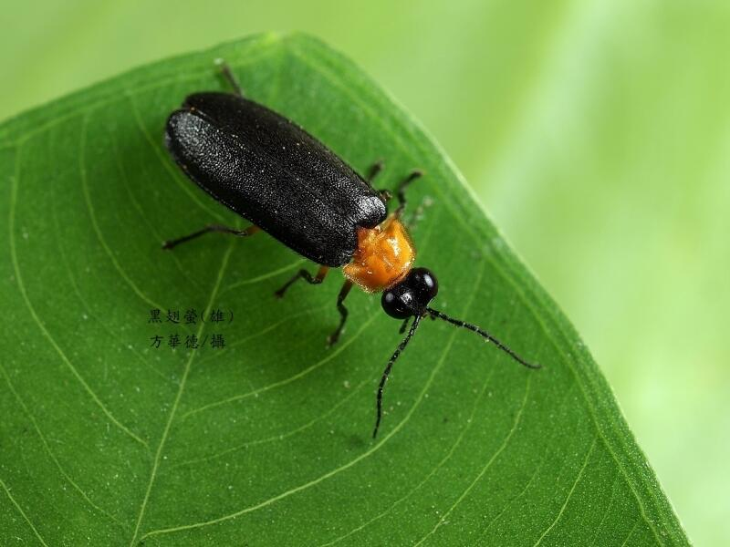
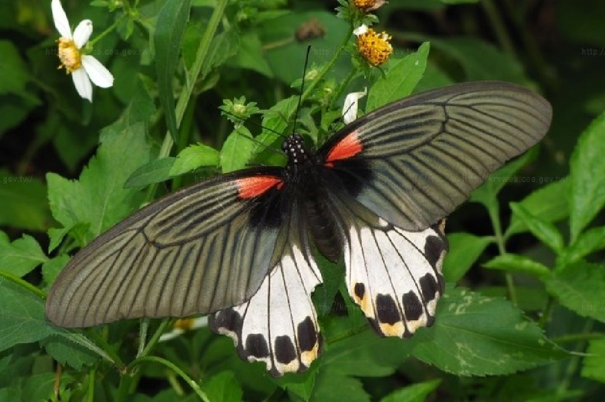
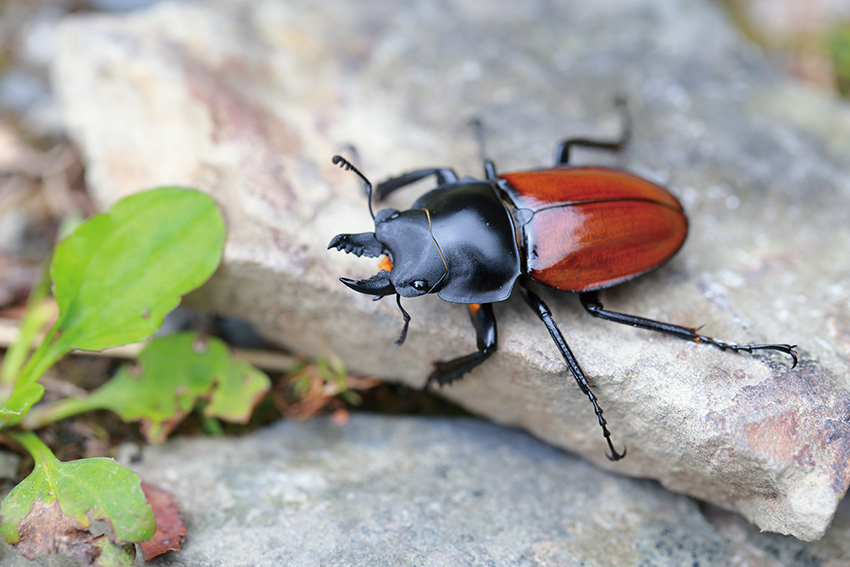
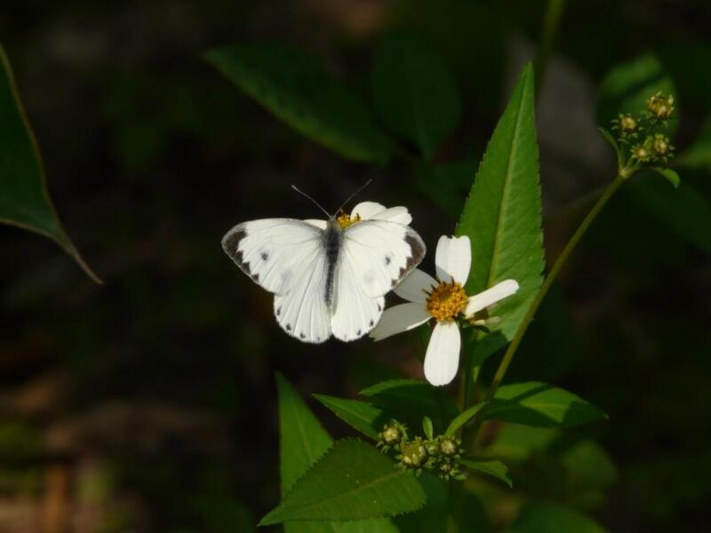
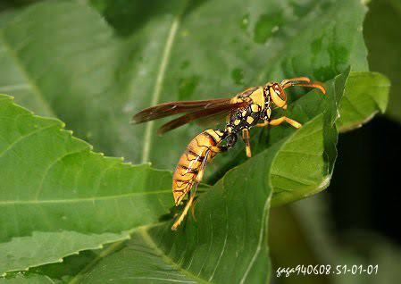
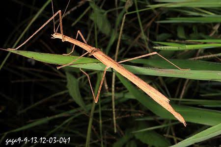

甘家堡埤塘常見昆蟲
昆蟲是埤塘生態的重要指標之一。 不同種類的昆蟲與植物、水質及季節變化密切相關， 能反映出埤塘環境的健康狀態。

黑翅螢 Black-winged Firefly
黑翅螢是臺灣常見的螢火蟲之一， 喜歡棲息於潮濕且植被豐富的環境。 牠們發出的螢光是求偶訊號，也是良好生態環境的指標。
了解更多
大鳳蝶 Great Mormon
大鳳蝶體型大型，翅膀具有鮮明花紋， 常出現在花草豐富的環境中吸食花蜜， 是埤塘周邊常見的重要授粉昆蟲。
了解更多
紅圓翅鍬形蟲 Red Round-winged Stag Beetle
紅圓翅鍬形蟲多生活於樹林與腐木環境， 幼蟲會分解腐朽木質，促進自然界的物質循環， 是具有特色的森林性甲蟲。
了解更多
臺灣紋白蝶 Taiwan Cabbage White
臺灣紋白蝶常活動於草地與開闊環境， 會在花叢間吸食花蜜， 並協助植物完成授粉。
了解更多
長腳蜂 Paper Wasp
長腳蜂具有細長的腳與明顯的蜂巢構造， 主要捕食毛毛蟲等昆蟲， 能幫助維持自然環境中的生態平衡。
了解更多
竹節蟲 Stick Insect
竹節蟲具有高度擬態能力， 外型與樹枝相似，可以躲避天敵。 牠們主要取食植物葉片，是綠地中的特色昆蟲。
了解更多